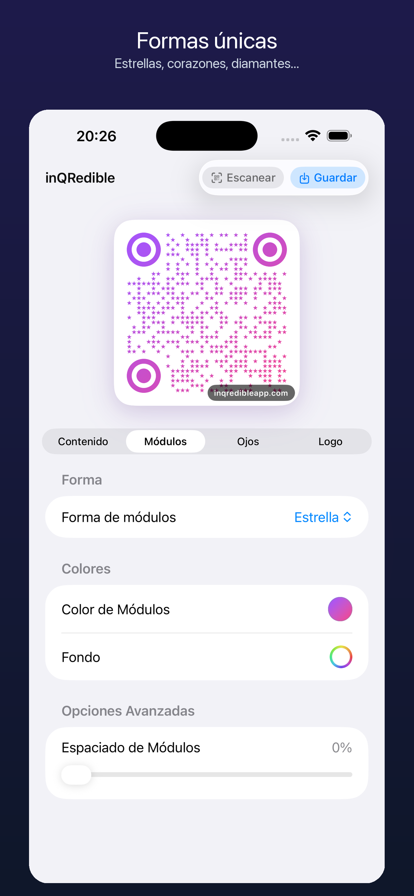
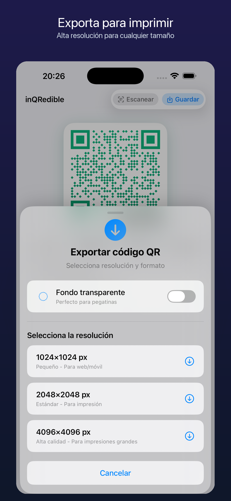

Enlaces y texto
URL normalizadas, texto libre y pegado desde portapapeles.
Nueva experiencia nativa para iPhone
Crea QR para enlaces, Wi-Fi, contactos, eventos y redes sociales. Personaliza colores, formas y logo, revisa tus escaneos y exporta archivos listos para compartir, imprimir o publicar.

Crear QR sin fricción
inQRedible no empieza con una caja vacía. Elige el tipo de QR, completa los campos correctos y la app genera el contenido con el formato adecuado para que lo puedas probar, guardar y reutilizar.
URL normalizadas, texto libre y pegado desde portapapeles.
Redes WPA/WEP, ocultas o abiertas, y coordenadas geo.
vCard, email, SMS, teléfono y calendario con datos estructurados.
Instagram, Facebook, X, WhatsApp, YouTube, Spotify, TikTok y Snapchat.
EAN-13, UPC-A, Code 128 y PDF417 desde la misma app.
Avisos de URL, email, teléfono, coordenadas y contraste bajo.
Diseño visual
Personaliza módulos, ojos, colores sólidos o degradados, espaciado, logo central, imagen de fondo e imagen como contenido visual. La interfaz sigue patrones nativos de iOS: formularios agrupados, controles segmentados, menús y toggles reconocibles.



Lector QR y barras
El escáner usa la cámara del iPhone para leer QR y códigos compatibles. Si detecta enlaces, muestra señales básicas como HTTP, acortadores, IPs o patrones sospechosos antes de abrirlos.
Consulta códigos creados y códigos escaneados sin mezclarlos.
Abre URL, copia contenido o envía un QR al editor para reutilizar su diseño.
Las señales de riesgo ayudan a decidir, pero no sustituyen tu criterio.
Exportación
Guarda y comparte el QR desde iOS. Para trabajos de marca, PRO desbloquea exportación transparente y resoluciones superiores para imprenta, presentaciones, packaging, menús, tarjetas o redes sociales.

inQRedible PRO
Empieza gratis. Cuando necesites diseños premium, plantillas sociales, fondos transparentes o archivos de mayor resolución, activa PRO desde la app con prueba gratuita de 3 días.
Probar en App StoreDisponible para iPhone
Una app para pequeños negocios, creadores, eventos, restaurantes, tarjetas digitales y cualquier persona que necesite códigos QR claros, bonitos y fáciles de reutilizar.